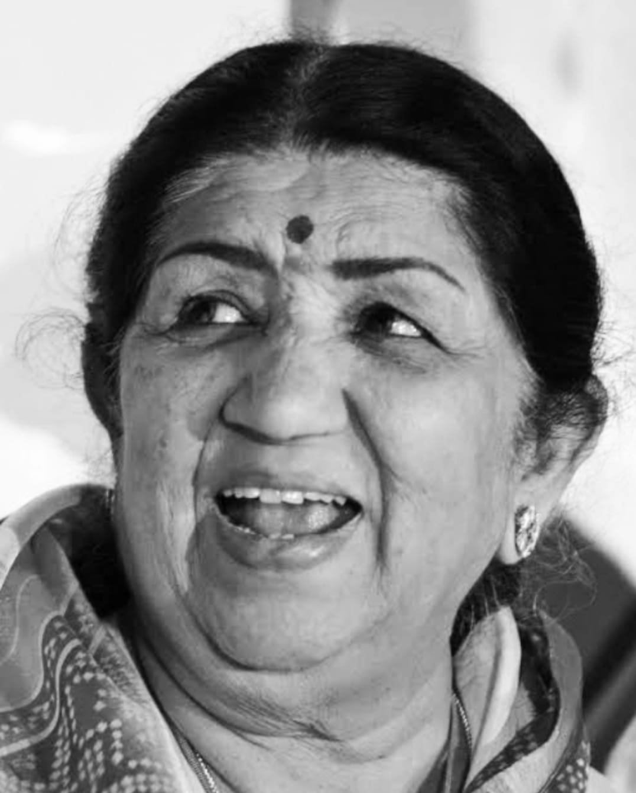

Lata Mangeshkar ( Sep 1929 - Feb 2022 )
A Short Biography of Lata Mangeshkar Ji
- Lata Mangeshkar was born on September 28, 1929 in the city of Indore (INDIA).
- Lata Mangeshkar Ji was one of the best known as Indian Playback Singer.
- Lata Mangeshkar Ji was also known as the 'Nightingale of India' and 'Queen of Melody'.
- Lata Mangeshkar's Father's name was Deenanth Mangeshkar.
- Lata Mangeshkar's Mother's name was Shevanti Mangeshkar.
- Lata Mangeshkar was the eldest of five siblings.
- At the age of 13, Lata Ji started her career and since then Lata ji was giving her Sweet voice ti Indian Cinema.
- Lata Mangeshkar had sung more than 50,000 songs in 36 different languages.
- Lata Mangeshkar had won several awards and honours, including, Bharat Ratna, Padma Bhusan, Padma Vibhushan, Dadasaheb Phalke Awards and many more.
- Lata Mangeshkar was independent political party.
- Lata Mangeshkar breathed her last at Breach Candy Hospital, Mumbai on 6 Feburary 2022.
- Lata Mangeshkar is an inspirational for all of us.